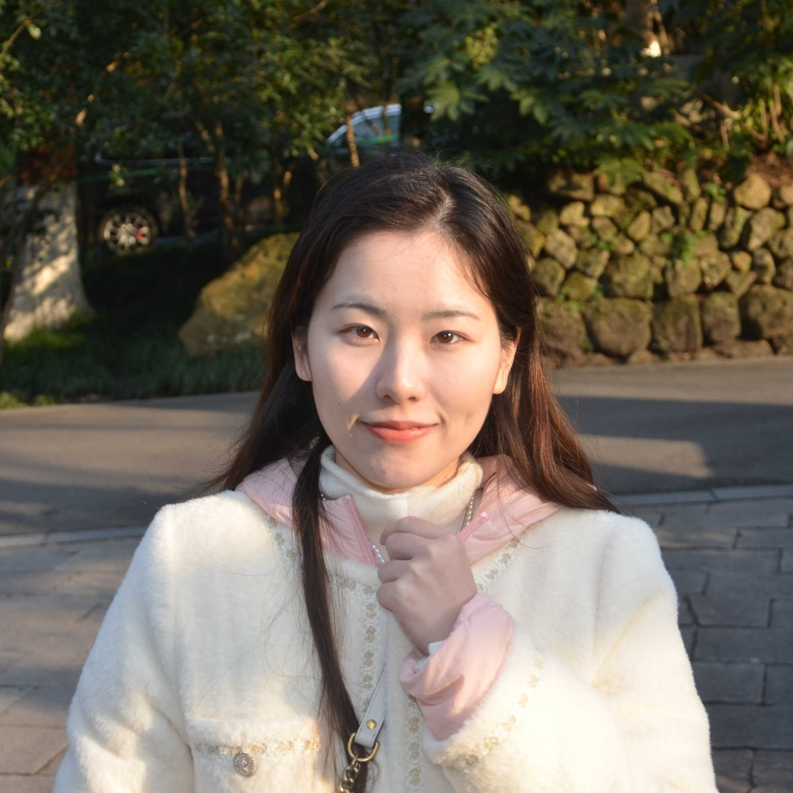

Yuji Zhang (张雨季)Postdoc
University of Illinois at Urbana-Champaign |
 |
 Twitter
TwitterI am a postdoc researcher in the University of Illinois at Urbana-Champaign (UIUC). I am fortunately supervised by Prof. Heng Ji and Prof. Chengxiang Zhai.
Research
I have broad interests in Natural Language Processing (NLP), theoretical interpretation of large language models (LLMs), and trustworthy LLMs. Especially, I focus on the following directions:
- how to effectively and efficiently acquire real-world knowledge to equip and update large language models in the temporally evolving world.
- I am recently focusing on interpreting why large language models hallucinate.
Publications
(see full list in Google Scholar)
2020 - Present
-
Atomic Reasoning for Scientific Table Claim Verification
Yuji Zhang, Qingyun Wang, Cheng Qian, Jiateng Liu, Chenkai Sun, Denghui Zhang, Tarek Abdelzaher, Chengxiang Zhai, Preslav Nakov, Heng Ji.
Arxiv
[Arxiv] -
The Law of Knowledge Overshadowing: Towards Understanding, Predicting, and Preventing LLM Hallucination*
Yuji Zhang, Sha Li, Cheng Qian, Jiateng Liu, Pengfei Yu, Yi R. Fung, Chi Han, Kathleen McKeown, Chengxiang Zhai, Manling Li, Heng Ji.
ACL 2025
[ACL 2025] -
Knowledge Overshadowing Causes Amalgamated Hallucination in Large Language Models*
Yuji Zhang, Sha Li, Jiateng Liu, Pengfei Yu, Yi R. Fung, Jing Li, Manling Li, Heng Ji.
Arxiv preprint
[Arxiv] -
Internal Activation as the Polar Star for Steering Unsafe LLM Behavior
Peixuan Han, Cheng Qian, Xiusi Chen, Yuji Zhang, Denghui Zhang, Heng Ji.
EMNLP 2025
[EMNLP 2025] -
EscapeBench: Pushing Language Models to Think Outside the Box
Cheng Qian, Peixuan Han, Qinyu Luo, Bingxiang He, Xiusi Chen, Yuji Zhang, Hongyi Du, Jiarui Yao, Xiaocheng Yang, Denghui Zhang, Yunzhu Li, Heng Ji.
ACL 2025
[ACL 2025] -
EVEDIT: Event-based Knowledge Editing for Deterministic Knowledge Propagation
Jiateng Liu*, Pengfei Yu*, Yuji Zhang, Sha Li, Zixuan Zhang, Heng Ji.
Proceedings of the 2024 Conference on Empirical Methods in Natural Language Processing (EMNLP), 2024.
[EMNLP 2024] -
VIBE: Topic-Driven Temporal Adaptation for Twitter Classification
Yuji Zhang, Jing Li, Wenjie Li.
Proceedings of the 2023 Conference on Empirical Methods in Natural Language Processing (EMNLP), 2023.
[EMNLP 2023] -
Towards Fair Financial Services for All: A Temporal GNN Approach for Individual Fairness on Transaction Networks
Zixing Song, Yuji Zhang, Irwin King.
Proceedings of the 32nd ACM International Conference on Information and Knowledge Management.
[CIKM '23] -
# HowYouTagTweets: Learning User Hashtagging Preferences via Personalized Topic Attention
Yuji Zhang, Yubo Zhang, Chunpu Xu, Jing Li, Ziyan Jiang, Baolin Peng.
Proceedings of the 2021 Conference on Empirical Methods in Natural Language Processing, 2021.
[EMNLP 2021]
Recent News
Invited Talks, Tutorials, Workshops, and Sevice
- [Aug 2025] Organized a Workshop on "Towards Knowledgeable Foundation Models" at ACL 2025
- [Aug 2025] Session chair for "Language Models and Interpretability" at ACL 2025
- [Aug 2025] Session chair for "Language Modeling" at ACL 2025
- [Apr 2025] Invited Talk of "The Law of Knowledge Overshadowing: Towards Understanding, Predicting, and Preventing LLM Hallucination" at Ploutos
- [Apr 2025] Invited Talk of "The Law of Knowledge Overshadowing: Towards Understanding, Predicting, and Preventing LLM Hallucination" at Chinese Academy of Sciences
- [Mar 2025] Invited Talk of "The Law of Knowledge Overshadowing: Towards Understanding, Predicting, and Preventing LLM Hallucination" at University of Texas at Austin
- [Feb 2025] Organized a Tutorial on "The Lifecycle of Knowledge in Large Language Models: Memorization, Editing, and Beyond" at AAAI 2025
- [Aug 2024] Invited Talk of "Knowledge Overshadowing Causes Amalgamated Hallucination in Large Language Models" at Beijing Academy of Artificial Intelligence
Honors
- Outstanding Student Leader of Southeast University 2017, 2018, 2019
- Second Prize in National Undergraduate Mathematical Contest in Modeling, 2018
- Skyworth Scholarship, 2018
- National Scholarship (Top 1%, the highest scholarship for undergraduates), 2017
- Merit Student of Jiangsu Province (Top 0.1%), 2016
Experiences
- 2020/01 - 2020/06: Research intern at Dartmouth College (Advisors: Prof. Xingdong Yang, Prof. Te-Yen Wu)
- 2023/12 - 2024/08: Visiting PhD student at UIUC (Advisor: Prof. Heng Ji)
Professional Activities
Instructor
- UIUC CS 591: Biologically Plausible Artificial Intelligence, Fall 2025, UIUC
Instructor
- UIUC CS 591: Biologically Plausible Artificial Intelligence, Spring 2025, UIUC
Teaching Assistant
- COMP 5511: Artificial Intelligence Concepts, Spring 2023, PolyU
- COMP 4141: Crowdfunding and e-Finance, Spring 2022, PolyU
- COMP 1433: Introduction to Data Analytics, Spring 2021, PolyU
Conference Reviewer
- ACL ARR (2025), KDD (2023), EMNLP (2024), EACL (2023), COLING (2023)
Misc.
-
I enjoy reading and crafts. I have practiced taekwondo and piano for four years.
-
In my free time, I love hiking, swimming, and exploring various cultural destinations.